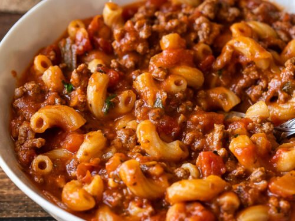

Goulash

Description
Goulash is a hardy and tasty dish comprised mostly of macaroni pasta, ground beef, and tomato sauce. Add onions for flavor and texture. Finish it off with some beef broth, seasoned salt and pepper, and garlic.
Ingredients
- Ground Beef
- Dry Macaroni Noodles
- Tomato Sauce
- Onion
- Beef Broth
- Seasoned Salt
- Garlic
Steps
- Start by browning the ground beef along with the onion. Drain any fat and then toss in garlic until fragrant.
- Pour in tomato sauce along with beef broth for some added depth of flavor.
- Add in the seasonings as well as dried macaroni noodles and let simmer until the noodles are cooked through.
- Dig in.